Les cas concrets, avec les vrais écrans de l’appli : créer ses biens, pointer les loyers, envoyer une quittance, trouver un locataire, le permis de louer, le bail et les états des lieux, la compta, le bilan, la facture électronique.
Tous les noms sont des exemples. Tu peux tout essayer sans risque dans la démo : rien n’y est enregistré. L’appli ne donne pas de conseil juridique ou fiscal : vérifie les points importants.
Gestion Locative Facile est une appli web : rien à télécharger dans un magasin d’applis, pas de compte, pas de publicité. Tes données restent sur ton téléphone.
Sur iPhone / iPad
Ouvre le lien dans Safari.
Touche Partager (carré avec une flèche).
Choisis Sur l’écran d’accueil, puis Ajouter.
Ouvre ensuite toujours l’appli depuis son icône.
Sur Android
Ouvre le lien dans Chrome.
Menu ⋮ → Installer l’application.
Scanne ce code avec l’appareil photo du téléphone :
Pas encore de biens ? Essaie d’abord la démo : des données d’exemple, rien n’est enregistré.
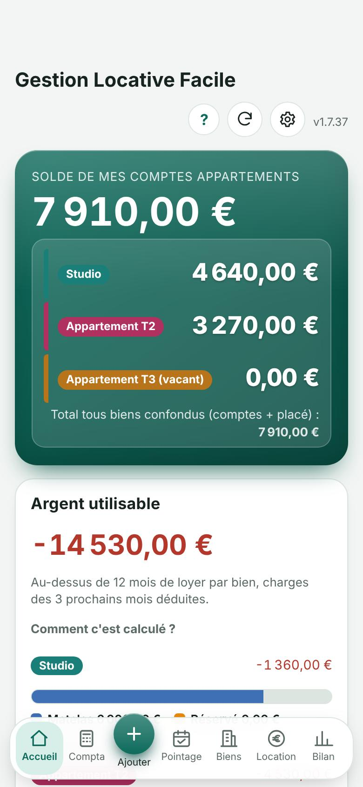
L’accueil, une fois les biens créés
1 Créer ses biens et régler l’appli
Tout est centralisé dans les Réglages, rangés en cinq onglets.
Touche la roue dentée en haut à droite, puis l’onglet Biens.
Modifier le bailleur : ton nom et ton adresse (ils servent pour les quittances et le bail).
Ajouter un bien : nom, adresse, type de location (vide ou meublé), crédit, assurances, loyer.
Dans Aspect, choisis les couleurs et, si tu veux, les onglets sur le côté.
Un « ? » sur chaque écran ouvre le mode d’emploi de cet écran.
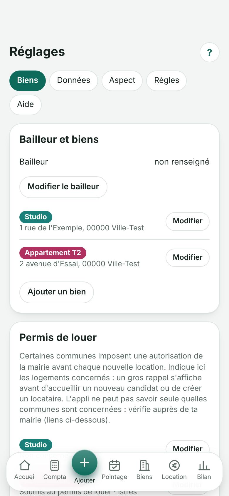
Réglages › Biens
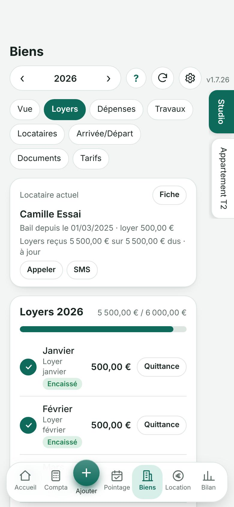
Onglets sur le côté
2 Saisir et pointer chaque mois
Une opération = une ligne de ton journal, comme dans Excel. Pointer = vérifier que la ligne est bien passée sur ton relevé.
Ajouter une opération
Touche le + vert.
Choisis le type (recette, dépense, épargne, entrée) et le bien (ou « Les 2 (50/50) »).
Tape le montant au pavé, la catégorie et le libellé.
Active Pointé si l’argent est déjà passé sur le compte.
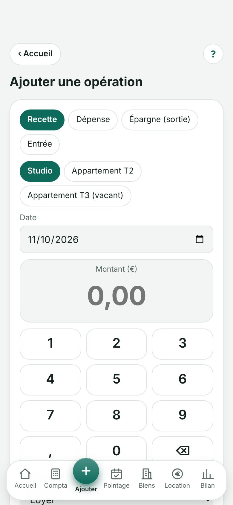
Ajouter une opération
Pointer le mois
Onglet Pointage › À pointer.
Touche le rond d’une ligne quand tu la vois sur ton relevé, ou Tout pointer.
En fin de mois, Clôturer le mois : tu saisis le solde réel du relevé et l’appli crée l’ajustement si besoin.
Le bénéfice de l’accueil ne compte que les lignes pointées.
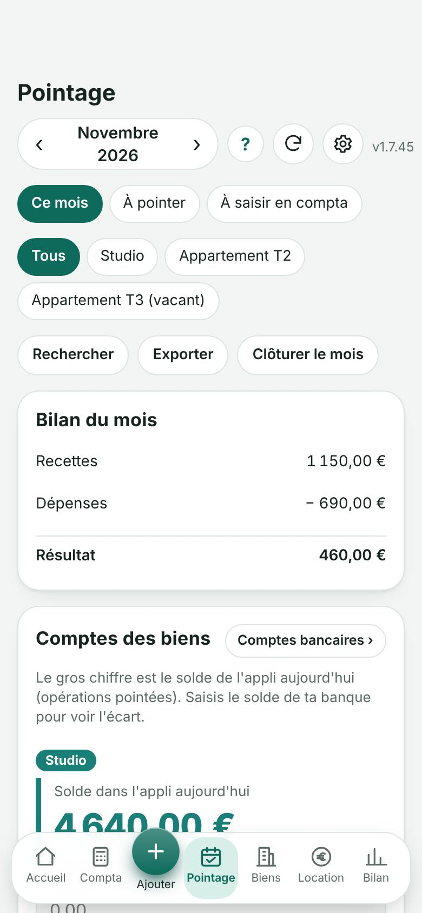
Pointage du mois
3 Suivre les loyers et envoyer une quittance
Chaque bien a ses loyers mois par mois.
Onglet Biens › Loyers.
Touche le rond d’un mois quand le loyer est encaissé.
Sur un loyer encaissé, Quittance fabrique le PDF, prêt à envoyer.
Les loyers en retard sont listés, avec appel ou SMS en un appui.
Quand un montant change (loyer, crédit, assurance), crée un nouveau Tarif : l’historique n’est jamais modifié.
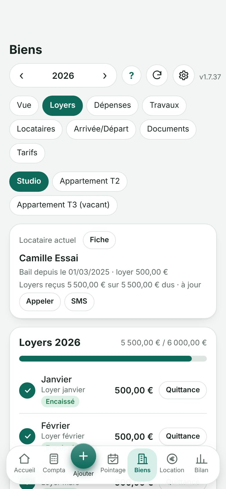
Les loyers
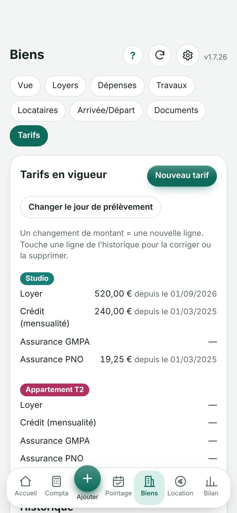
Les tarifs
4 Le matelas de sécurité
Combien peux-tu utiliser sans te mettre en difficulté ?
Onglet Biens › Vue.
L’appli met de côté 12 mois de loyer par bien, réserve les charges des 3 prochains mois, et te dit ce qui est utilisable.
« manque … € » en rouge : il n’y a pas encore assez de côté.
Rapprochement : tu tapes le solde réel du relevé, l’appli le compare et crée un ajustement daté s’il y a un écart.
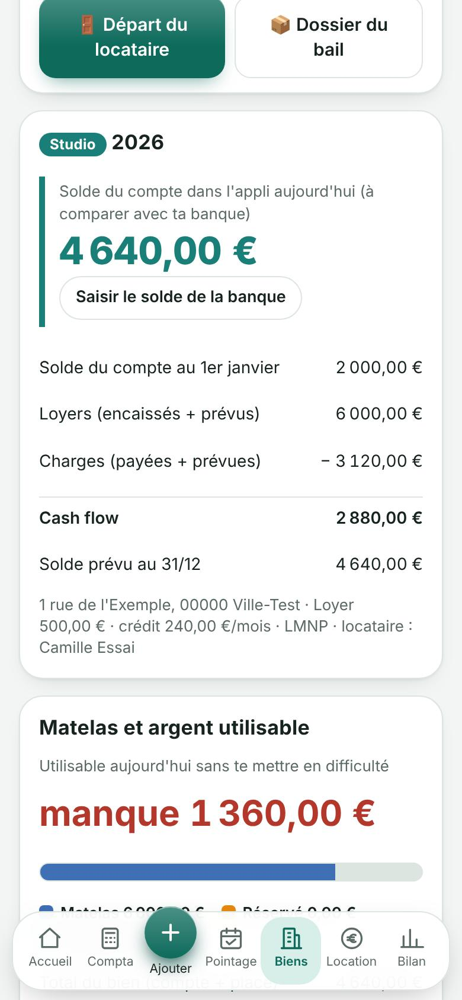
Vue d’un bien
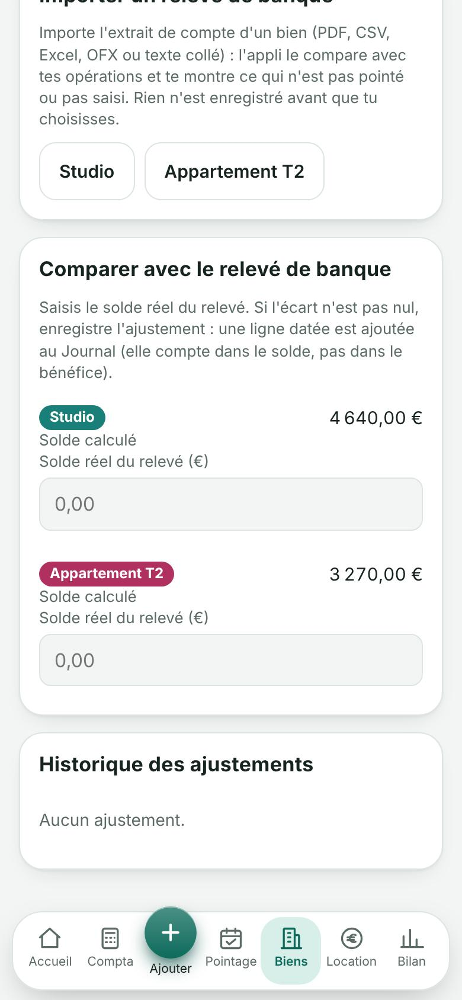
Rapprochement bancaire
5 Trouver un locataire : annonce, candidats, visite
De l’annonce jusqu’à la visite, sans serveur : tout passe par ton e-mail.
1 · L’annonce
Onglet Location › Annonce.
Remplis les infos du bien : l’appli te dit ce qu’il manque.
Crée le PDF ou copie le texte pour un site d’annonces.
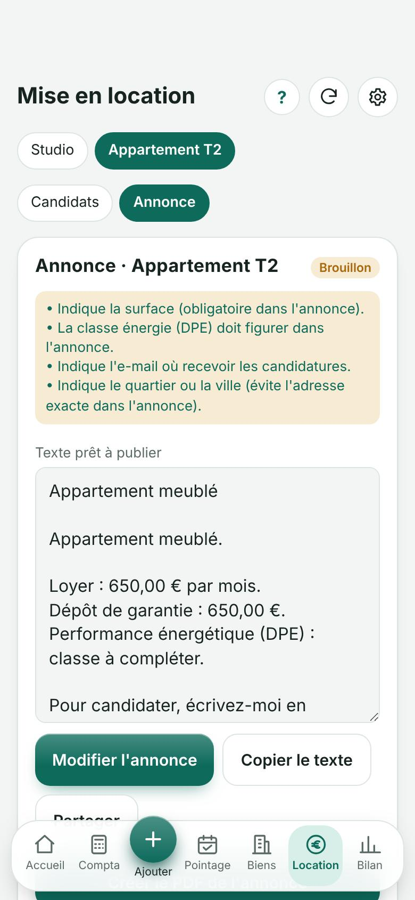
L’annonce
2 · Les candidats
+ Candidat crée une fiche à la main.
Ou envoie le lien du formulaire de candidature : quand l’e-mail arrive, colle le texte, la fiche se remplit.
Les filtres suivent chaque étape : demande reçue, visite, dossier à vérifier, retenu, refusé.
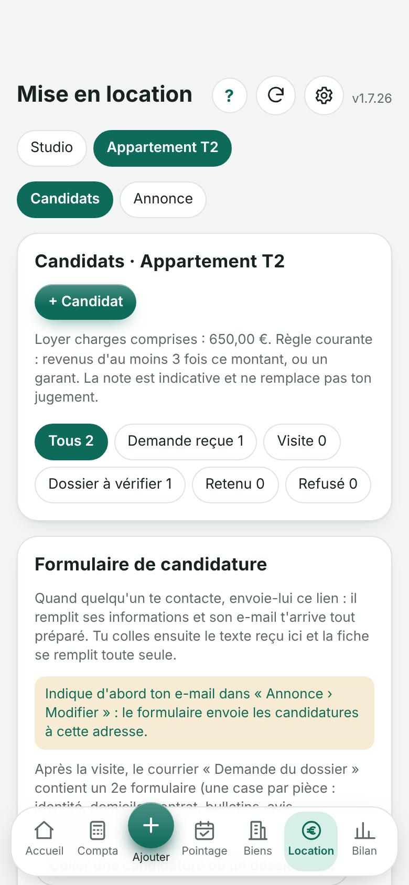
Les candidats
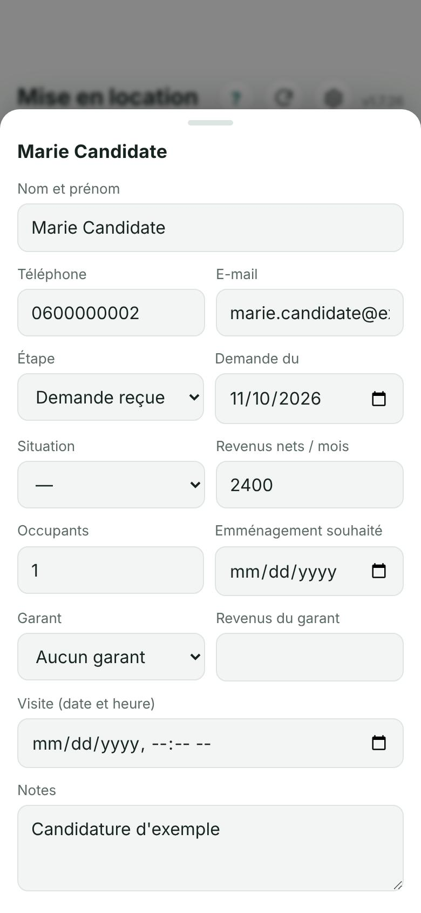
La fiche d’un candidat
3 · La visite → ton agenda
Note la date et l’heure de la visite dans la fiche.
À l’enregistrement, l’appli propose d’envoyer la visite vers AgenDam (code à copier ou lien) ou vers le calendrier du téléphone (fichier .ics, avec rappel 1 h avant).
L’événement contient l’adresse, le nom, le téléphone, l’e-mail et les infos du dossier.
L’agenda se choisit dans Réglages › Biens › Agenda pour les visites.
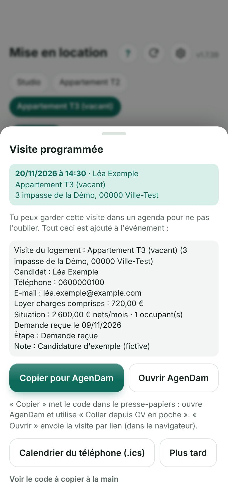
Visite envoyée vers l’agenda
6 Le formulaire de candidature
Le candidat remplit une page en ligne, son e-mail t’arrive tout préparé et la fiche se remplit en un collage.
Onglet Location › Candidats : carte Formulaire de candidature.
Copier le lien ou Partager le lien, puis envoie-le au candidat (indique d’abord ton e-mail dans Annonce).
Il touche Préparer mon e-mail : le texte de sa candidature s’affiche, puis il l’envoie à ton adresse.
Tu copies le texte reçu, puis Coller une candidature ou un dossier reçu › Créer la fiche.
Après la visite, le courrier « Demande du dossier » contient un 2e formulaire (une case par pièce) : enregistre les pièces reçues dans Fichiers puis sélectionne-les dans l’appli.
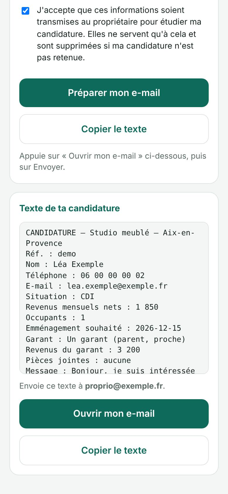
Son e-mail préparé
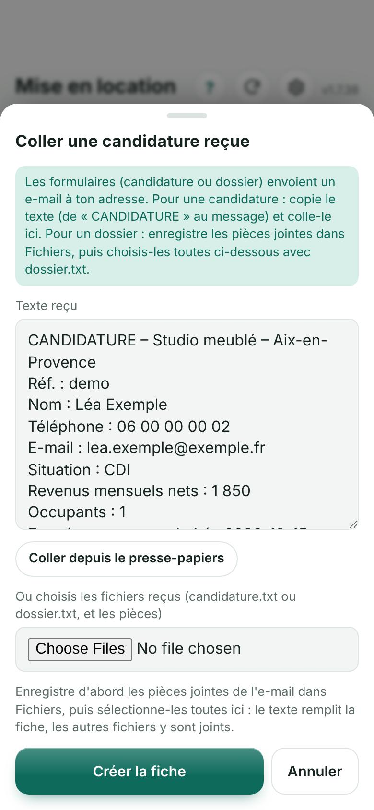
Tu colles, la fiche se remplit
7 Le permis de louer
Dans certaines communes (comme le centre ancien d’Istres), une autorisation de la mairie est obligatoire avant chaque nouvelle location.
Réglages › Biens › Permis de louer : coche les logements concernés et la commune.
Un gros rappel s’affiche avant d’ajouter un candidat et avant de créer le locataire : l’autorisation est à obtenir avant la signature du bail, une par locataire.
Tu y trouves les coordonnées de la mairie (préremplies pour Istres), les rendez-vous et visites de contrôle (avec envoi vers l’agenda) et la lettre de demande en PDF.
Note « Demande déposée » puis « Autorisation obtenue » : le suivi repart à zéro au locataire suivant.
L’appli ne peut pas savoir quelles communes sont concernées, ni si les meublés en font partie : vérifie auprès de ta mairie (liens dans les Réglages).
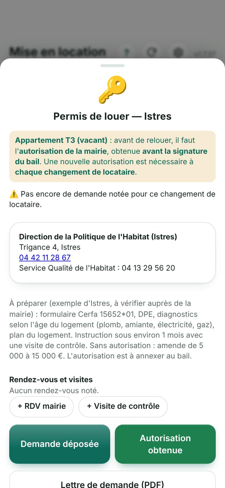
Le rappel
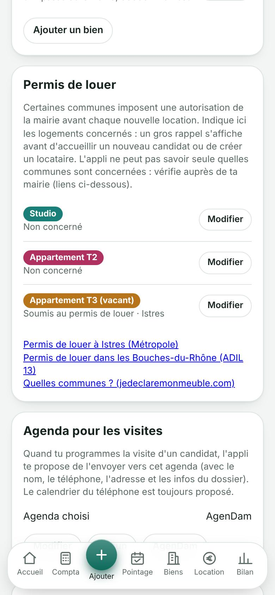
Le réglage
8 Du bail à la remise des clés
Bail, état des lieux, inventaire, signature : tout se fait dans l’appli.
Retenir le candidat
Dans la fiche : Retenir ce candidat.
Indique le début du bail, le loyer et le dépôt de garantie (2 mois de loyer hors charges au maximum en meublé, 1 en vide).
Le locataire est créé avec son dossier et l’arrivée est préparée.
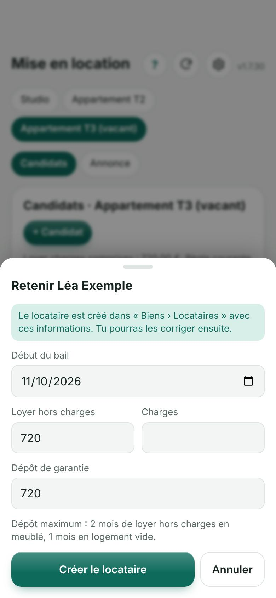
Retenir le candidat
Le bail meublé
Onglet Biens › Documents › Bail meublé (PDF).
Remplis le formulaire (bailleur, locataire, logement, loyer, dépôt, durée).
Crée d’abord le PDF de relecture (sans signature) et relis-le avec le locataire.
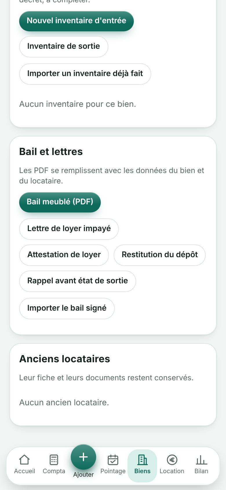
Documents
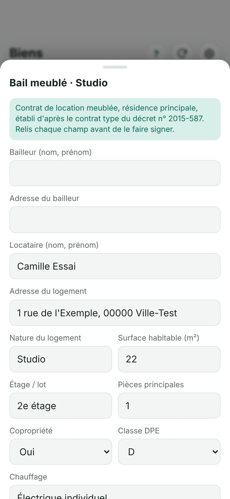
Le formulaire du bail
États des lieux et inventaire
Nouvel état d’entrée : pièce par pièce, avec photos.
En meublé, l’inventaire du mobilier suit le même principe.
Tu peux préparer à l’avance en reprenant la liste d’un autre logement, ou importer un ancien état.
Pendant la visite, la vue compacte (par défaut) montre un élément par ligne, avec ＋ pour l’observation (et les photos, dans l’état des lieux) ; Vue détaillée revient à l’affichage large.
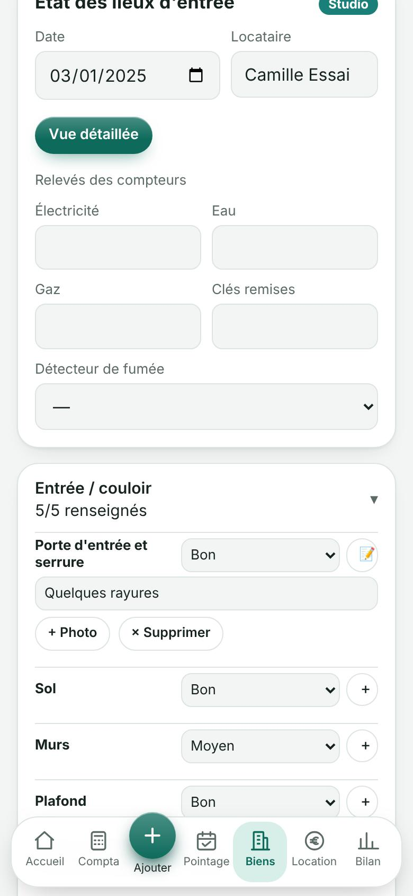
État des lieux compact
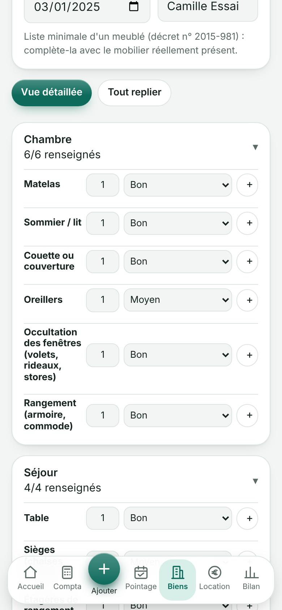
Inventaire compact
9 Signer à l’écran et suivre l’arrivée
Les signatures se font au doigt, un exemplaire pour chacun.
Dans chaque document : Faire signer sur l’écran.
Le PDF signé est rangé dans les documents du locataire.
Sur papier : Signer sur papier, une seule page à imprimer, puis photographier ou scanner la page signée.
Onglet Arrivée/Départ : deux listes à cocher, étape par étape. Les boutons ouvrent directement le bon document.
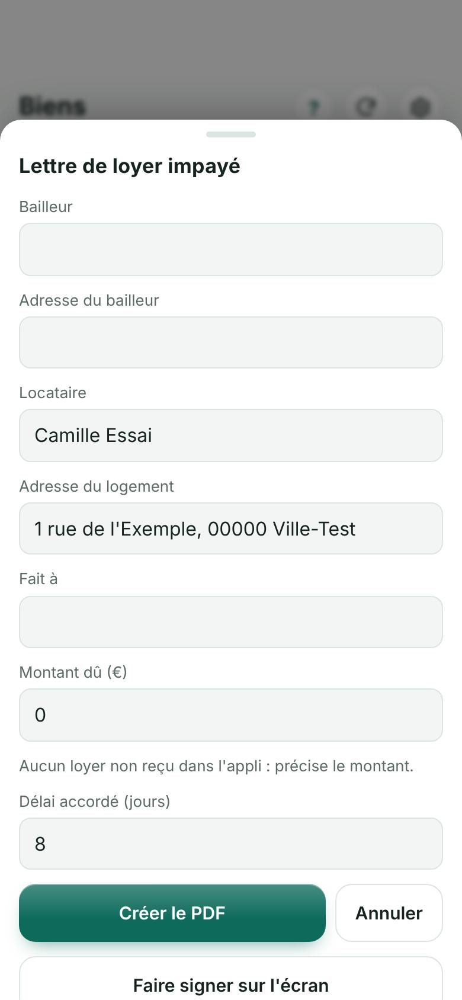
Lettre et signature
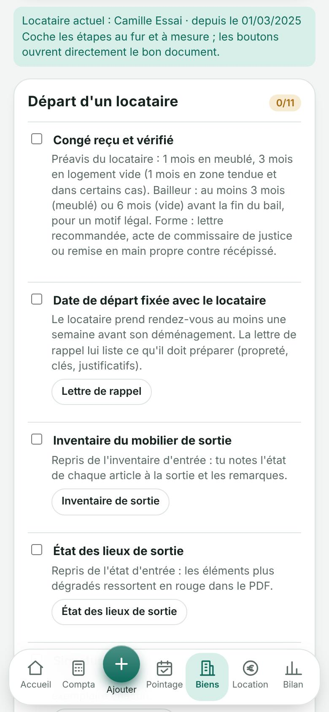
Arrivée et départ
10 Envoyer un document au locataire
Un même bouton, une même fenêtre, pour le bail, l’état des lieux, l’inventaire, les lettres et la quittance.
Crée le PDF : Envoyer au locataire s’ouvre.
La case Ranger aussi une copie dans la fiche garde le PDF dans sa fiche et dans la carte du document.
Mail ou Outlook et SMS ouvrent un message déjà rédigé pour le locataire (une appli ne peut pas y joindre le PDF).
Autres (PDF joint) ouvre le partage avec le PDF en pièce jointe.
Enregistrer sur l’appareil garde le PDF dans Fichiers ; la fenêtre reste ouverte pour enchaîner avec un envoi.
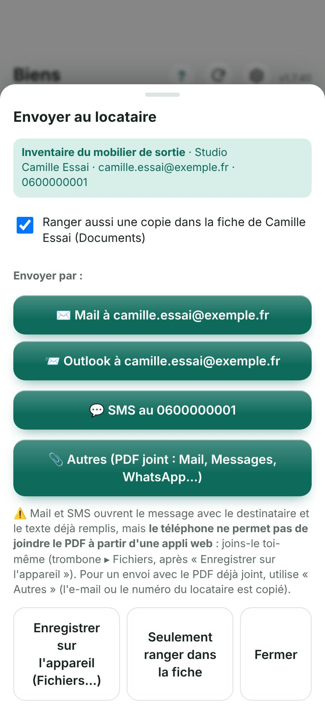
La fenêtre d’envoi
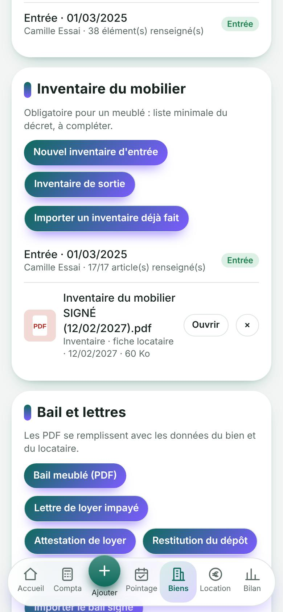
Le PDF rangé
11 Quand le locataire part
La liste « Départ d’un locataire » te guide du congé jusqu’au dépôt de garantie.
Congé reçu et vérifié, puis date de départ fixée : la lettre de rappel liste ce que le locataire doit préparer.
État des lieux (et inventaire) de sortie : repris de l’entrée, les éléments plus dégradés ressortent en rouge.
Loyers à jour : une lettre de loyer impayé est prête si besoin.
Retenues justifiées (devis ou factures), puis lettre de restitution du dépôt.
Dernière quittance, puis ferme la fiche du locataire.
Les délais légaux changent : l’appli te rappelle de vérifier le texte en vigueur avant chaque bail (Réglages › Règles).
Départ d’un locataire
12 La compta de A à Z
Tout ce qu’il faut pour remplir ta compta en ligne, sans rien oublier.
Onglet Compta : l’année s’affiche en gros ; change d’année avec les pastilles.
Note la date limite et ton site de compta (facultatif) : l’appli te rappelle « Vous avez jusqu’au… ».
Quand tout est fait : Clôturer : compta faite.
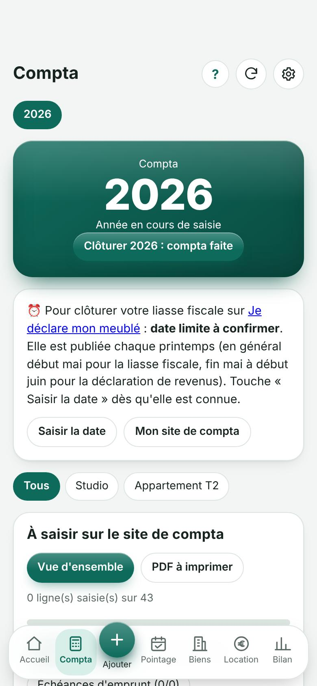
L’année de compta
« À saisir sur le site » : dépenses, recettes, échéances d’emprunt, bien par bien.
Coche une ligne, un mois ou tout, puis Marquer comme saisi. Une erreur ? Annuler pendant 12 secondes.
Vue d’ensemble : tout ce qu’il faut saisir d’un coup d’œil, avec zoom, et un PDF à imprimer à avoir sous les yeux devant le site.
La liasse fiscale de chaque année s’importe (PDF ou photo) pour la retrouver ici.
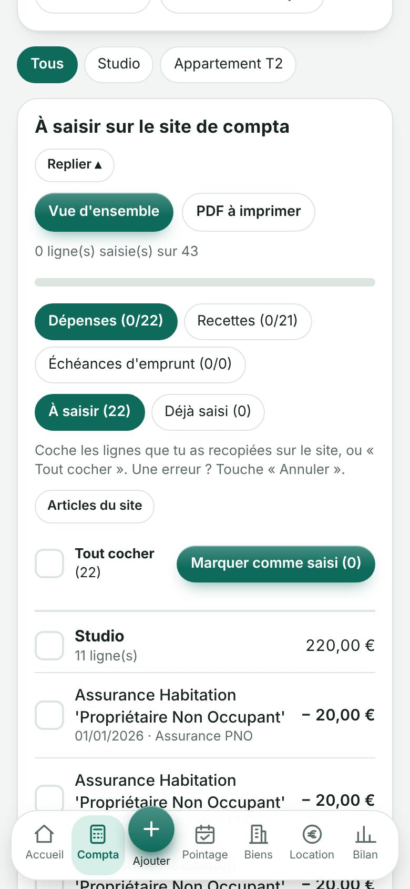
À saisir
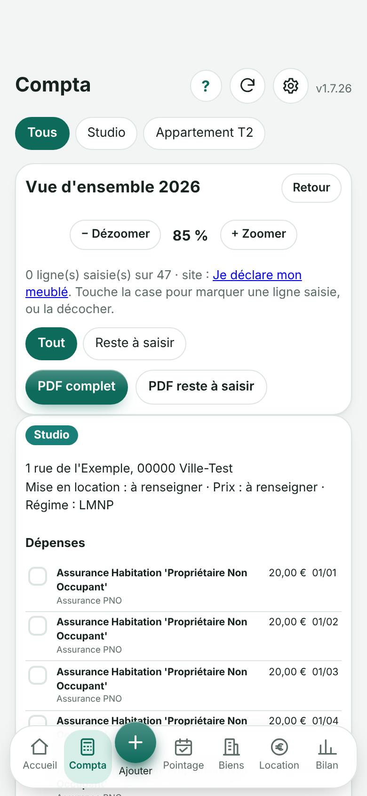
Vue d’ensemble
13 Le bilan
Les chiffres de l’année, bien par bien.
Onglet Bilan : cash flow, performance de l’année, mois par mois, toutes les années.
Exporter un mois ou une année en Excel ou en PDF.
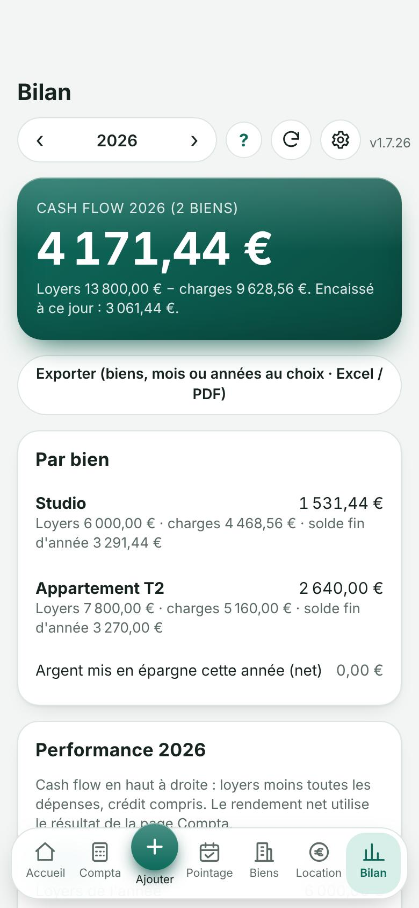
Le bilan
14 La facture électronique
Depuis le 1er septembre 2026, un loueur en meublé qui a un numéro SIREN doit pouvoir recevoir les factures électroniques de ses fournisseurs via une plateforme agréée.
Réglages › Règles › Facture électronique : ce que tu dois faire.
Choisis une plateforme agréée et note son nom et son lien : un bouton Ouvrir apparaît sur l’accueil.
Tes loyers ne sont pas concernés (tu continues avec les quittances). L’émission ne concerne que les loueurs soumis à la TVA, à partir de septembre 2027.
À confirmer avec les impôts ou ton comptable. La carte « Sources utilisées » liste les pages consultées.
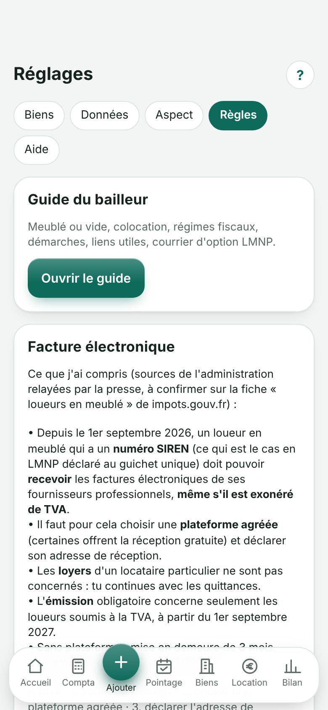
Facture électronique et règles
15 Sauvegarder et protéger
Tes données sont uniquement sur ton téléphone : sauvegarde-les.
Réglages › Données : export Excel du journal, sauvegarde légère (.json) ou complète avec les fichiers (.zip).
Synchronisation avec ton classeur Excel, sans jamais écraser tes formules.
Sécurité : verrouillage par code (et Face ID dans l’appli installée).
Tout effacer n’est jamais fait sans ta confirmation.